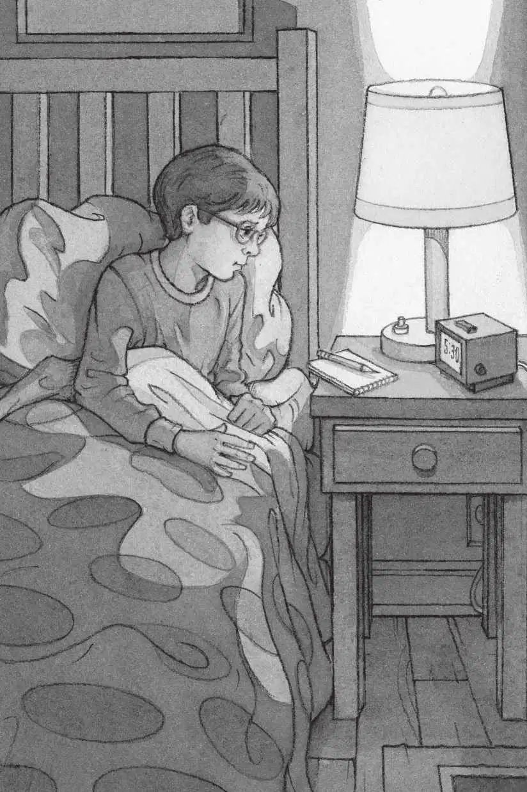
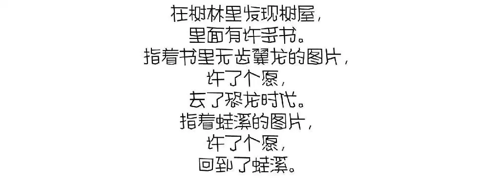
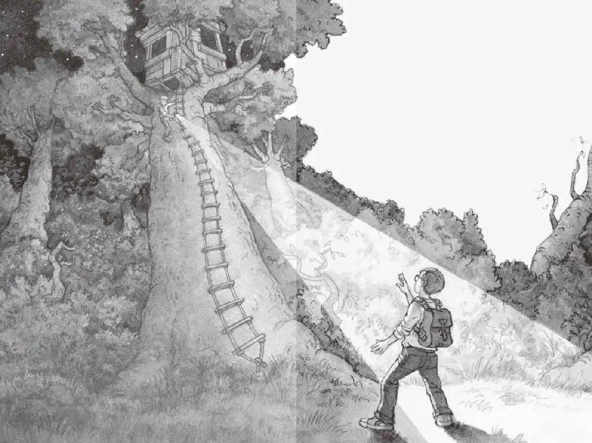

杰克睡不着觉。他把眼镜戴上，看了看钟。
才五点半，这时候起床太早了。
昨天发生了那么多奇怪的事情，现在他想把它们理理清楚。他打开灯，拿起笔记本，看了看自己上床前写的笔记。

杰克把眼镜往上推了推。这些话有谁会相信呢？
妈妈不会信，爸爸不会信，他三年级的班主任瓦特金斯夫人也不会信。唯一会相信的，只有他七岁的妹妹安妮，因为只有安妮跟他一起去了恐龙时代。
“你睡不着吗？”安妮问。
是安妮，正站在他的房门口。
“睡不着。”杰克说。
“我也是。”安妮说，“你在做什么呢？”
安妮走到杰克身边，看着翻开的笔记本，把上面的文字读了一遍。
“金奖章的事你不准备写吗？”安妮问。
“你说的是那枚金勋章吧？”杰克说。
他拿起铅笔，写道：
“你不在奖章上面加上字母M吗？”安妮问。
“是勋章，”杰克说，“不是奖章。”
他加了一个M：
“关于那个神秘的人，你不准备写下来吗？”安妮问。
“我们还不能确定是不是有这样一个人呢。”杰克说。
“反正，有人在树林里建了那个树屋，有人把书放在了里面，有人在恐龙时代丢失了一枚金奖章。”安妮说。
“是勋章！”杰克第三次纠正道，“我只记录事实，只记录我们确切知道的事情。”
“我们现在就回树屋去吧，”安妮说，“去弄清楚那个神秘的人是不是真的存在。”
“你疯了吗？”杰克说，“太阳还没有升起来呢。”
“快走吧，”安妮说，“没准儿我们可以趁他们睡着的时候抓住他们。”
“我认为我们不应该这么做。”杰克说。
杰克很担心，万一那个神秘人物是坏人呢？万一那个人不想让小孩子知道树屋的事呢？
“好吧，那我去了。”安妮说。
杰克看着窗外灰黑色的天空，天快要亮了。
杰克叹了口气说：“好吧，快把衣服穿好，我在后门跟你会合。嘘，别出声。”
“好嘞！”安妮小声说。她像老鼠一样悄没声儿地踮着脚离开了。
杰克穿上牛仔裤、暖和的套头衫和运动鞋，把笔记本和铅笔扔进书包，然后悄悄地走下楼。
安妮正在后门口等着呢。她用手电筒照着杰克的脸，调皮地叫道：“看招！这是魔杖！”
“嘘！别把爸爸妈妈吵醒了。”杰克压低声音说，“快把手电筒关掉，可不能让别人看见我们。”
安妮点点头，把手电筒关了，然后把它别在自己的腰带上。
他们从后门溜了出去。黎明前的空气凉爽而清新。蟋蟀在唧唧吱地鸣叫，隔壁人家的狗也发出了叫声。
“安静，亨利！”安妮小声说。
亨利不叫了，动物们似乎总是很听安妮的话。
“我们跑吧！”杰克说。
他们越过黑暗、潮湿的草地，一口气跑到了树林里。
“现在需要用到手电筒了。”杰克说。
安妮把手电筒从腰带上拿下来，拧亮。
然后，两个人一步一步地往树林深处走去。
杰克屏住了呼吸，黑漆漆的树林真吓人啊。
“抓住你了！”安妮突然把手电筒对准杰克的脸，大叫道。
杰克往后一跳，皱起了眉头。
“别这样！”杰克说。“我吓到你了。”安妮笑着说。
杰克气呼呼地说：“别胡闹了！这不是闹着玩儿的。”
“好吧，好吧。”安妮用手电筒照了照树梢。
“你这又是在做什么？”杰克问。
“寻找那个树屋呀！”安妮回答。

光柱不动了。
找到了，那个神奇树屋就在树林里最高的那棵树上。
安妮照了照树屋，又照了照那架高高的绳梯。绳梯从树上一直垂到地面。
“我上去啦。”安妮抓着手电筒，开始往绳梯上爬。
“等等！”杰克喊道。
“万一树屋里有人怎么办？”杰克想。
“安妮！回来！”杰克又喊了一声。
可是安妮已经不见了踪影，手电筒的光消失了。
杰克独自留在了黑暗中。